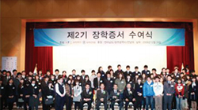
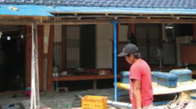
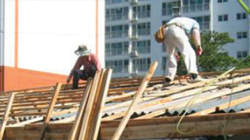

더불어 잘 사는 행복한 이웃을 꿈꾸는 우미는 소외된 이웃의 주거환경 개선 및인재육성까지 사회환원을 실현하고 있습니다
기업의 사회적 책임을 다하기 위해 노력하는 우미건설은 2003년부터 사회적 약자계층 이웃들에게노후, 불량주택을 보수 지원하고 있으며 또한 미래를 주도할 인재육성까지 후원하고 있습니다.앞으로도 우미건설은 인류사회의 풍요로운 번영을 위해 사회환원 사업에 최선의 노력을 다 할 것입니다.

- 금파재단
- 2008년에 설립한 금파재단은 가정형편이 어려운 소년소녀 가장 및 국가유공자 자손을 대상으로 매년 50여명의 장학 지원사업을 실시하고 있습니다.

- 국가유공자 노후주택 보수사업
- 국가를 위해 희생하신 분들에 대한 예우차원에서 생활형편이 어려운 국가유공자를 위해 무료로 주거여건 개선사업을 펼쳐왔습니다.

- 사랑의 집수리
- 소년소녀가장, 독거노인, 장애우 등의 사회적 소외된 이웃들에게 노후된
주거시설, 불량주택 등을 무료로 주거시설환경을 개선시켜주는 사업을
실시하였습니다.